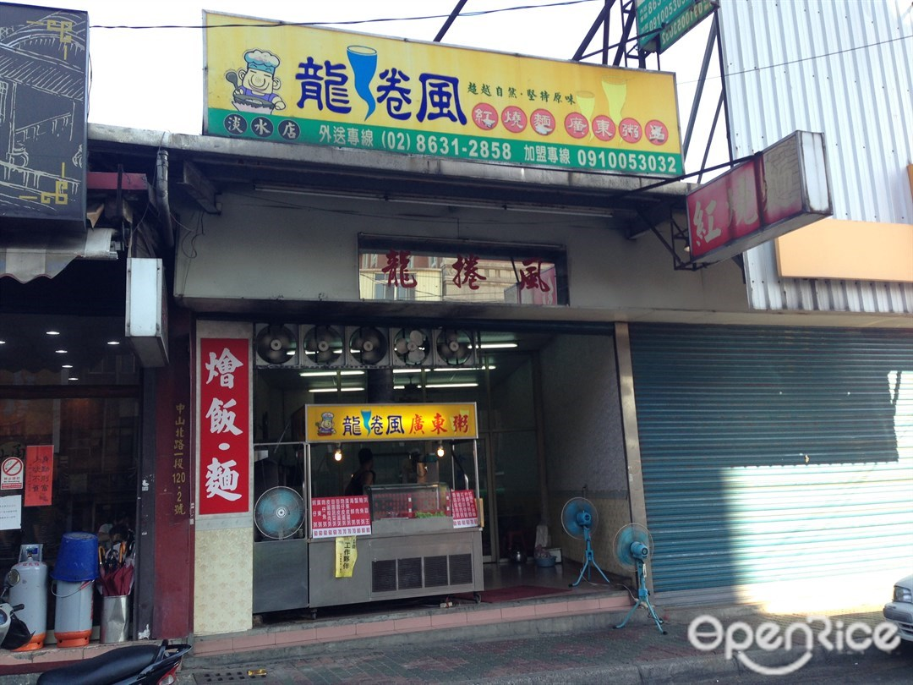
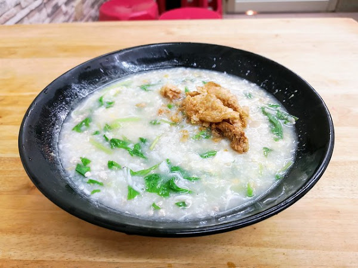

龍捲風
google評價：3.9★
店家資訊
地址：新北市淡水區中山北路一段120-1號
營業時間：早上10:30至晚上9:00，星期六休息
店家電話：02-8631-2858

推薦菜單
粥霸王90元 蟹肉粥90元 廣東粥70元
皮蛋瘦肉粥60元 吻仔魚粥70元 香菇瘦肉粥60元
紅燒牛小排麵70元 原汁牛肉麵70元
什錦海鮮麵80元 餛飩麵50元 陽春麵30元
肉絲蛋炒飯70元 海鮮蛋炒飯90元
蝦仁炒片80元 肉絲炒麵70元
顧客評論
光從菜單就可以看出品項非常多樣化，推薦的品項有吻仔魚粥，味道清爽，還有加了幾塊魚酥，吃起來不會單調，還有蝦仁炒麵，麵條是用雞蛋麵，加了不少空心菜跟蝦仁，不會太鹹，越吃越順口，粥品的部分料很多也很新鮮，粥上面還會有香脆的油條，味道很夠不用加胡椒粉。火腿蛋炒飯，米粒分明，份量也很多。